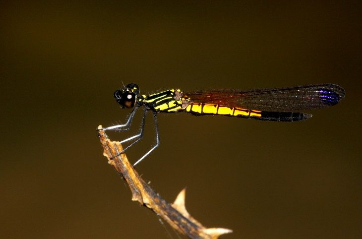

रिवर हेलियोडोर व्याध पतंगRiver Heliodor
Libellago lineata · Chlorocyphidae · INS-0211

- Scientific name वैज्ञानिक नाम
- Libellago lineata (Burmeister, 1839)
- Family कुल
- Chlorocyphidae
- Hindi हिंदी
- रिवर हेलियोडोर व्याध पतंग
- Local names स्थानीय नाम
- river heliodor, river heliodor damselfly, heliodor, nadi vyadh patang
- Status here यहाँ की स्थिति
- native
- Movement आवागमन
- Resident, here all year
- Known from कहाँ दर्ज
- Others have published records from the wider Awadh–Purvanchal plain, none yet from Basti–Ayodhya अवध–पूर्वांचल से दूसरों के प्रकाशित अभिलेख, बस्ती–अयोध्या से अभी नहीं
- IUCN IUCN
- not evaluated
- Review समीक्षा
- not yet reviewed
When to look कब देखें
Present all year. साल भर मौजूद।
Uses and possibilities उपयोग और संभावनाएँ
Drawn from the documented uses in the profile below, where each is labelled traditional, current or a research lead. All uses →
Tell it apart from इनसे अलग पहचानें
रिवर हेलियोडोर व्याध पतंग / River Heliodor
Libellago lineata (Burmeister, 1839) — Chlorocyphidae
रिवर हेलियोडोर व्याध पतंग — साफ पानी वाली छायादार नदियों, नालों और नहरों के किनारे पाई जाने वाली एक छोटी, मजबूत और अत्यंत आकर्षक डैमसेल्फ़्लाई है। इसके नर का शरीर चमकीले सुनहरे-पीले और मखमली काले रंग का होता है, और इसके पंखों के सिरों पर गहरे काले धब्बे होते हैं। इसके पैर चौड़े और सफेद रंग के होते हैं, जिन्हें नर अपनी प्रेमिका को लुभाने के लिए हवा में लहराता है। यह बहते पानी के ऊपर लटकी टहनियों पर बैठती है।
Quick Identification त्वरित पहचान
| Feature | Description |
|---|---|
| Size | Small, stoutly built damselfly; abdomen 14–16 mm, hindwing 15–18 mm (Subramanian 2005) |
| Male Abdomen | Brilliant golden-yellow marked with bold velvety black dorsal lines and spots (Fraser 1934) |
| Wing Markings | Forewing tips in male adorned with an opaque, velvety black apical patch (Subramanian 2005) |
| Legs | Hind and middle tibiae in male expanded and flattened, bright chalky white on inner surface (Fraser 1934) |
| Thorax | Velvety black on dorsum, adorned with fine golden-yellow antehumeral stripes (Fraser 1934) |
| Female Colour | Dull brownish-yellow and black; completely lacks the black apical wing patches (Subramanian 2005) |
| Habitat Association | Strictly lotic; confined to running freshwaters with overhanging vegetation |
Field tip: Look along shaded, tree-lined riverbanks and clear perennial streams. A small, compact damselfly with a bright golden-yellow-and-black abdomen perching on overhanging twigs or exposed root snags, whose male has dark-tipped forewings and displays bright white legs during territorial flight, is the River Heliodor.
हिंदी: बहती नदी के किनारे लटकी डालियों पर बैठने वाली इस छोटी पतंग का पेट सुनहरा-पीला और काला होता है, पंखों के सिरे काले होते हैं और इसके पैर सफेद होते हैं।
Morphology आकारिकी
Measurements as given in the handbooks (Subramanian 2005; Fraser 1934):
| Measurement | Range | Source |
|---|---|---|
| Abdomen length | 14–16 mm | Subramanian (2005) |
| Hindwing length | 15–18 mm | Subramanian (2005) |
Adult description:
Libellago lineata is a jewel-like chlorocyphid damselfly possessing a short, robust body and pronounced sexual dimorphism (Fraser 1934). In mature males, the head is velvety black, adorned with bright golden-yellow spots on the frons and occiput; the compound eyes are large, dark brown above, and olivaceous below (Subramanian 2005). The synthorax is robust, velvety black on the dorsum, and marked with a fine yellow mid-dorsal carina and narrow golden-yellow antehumeral stripes (Fraser 1934).
The male abdomen is short, depressed, and bright golden-yellow: segments 1 through 6 are yellow, heavily patterned with velvety black dorsal dashes and lateral spots; segments 7 through 10 are predominantly black with small yellow apical spots (Subramanian 2005). The legs are specialized for courtship: the inner faces of the middle and hind tibiae are distinctly dilated, flattened, and coated in pure chalky-white pruinescence (Fraser 1934).
Females are slightly larger and duller in ground colour (Fraser 1934). The thorax and abdomen are ochreous-yellow marked with black lines, and the wings are entirely transparent, lacking the black apical patches and tibial expansions found in males (Subramanian 2005). In males, the forewings are tipped with an opaque, deep blackish-brown patch covering the outer sixth of the wing, while the pterostigma is black (Fraser 1934).
Larval Stage निम्फ अवस्था
The aquatic naiad is flattened, stiff-bodied, and dark brownish-grey, clinging tenaciously to submerged dead wood, snags, and tree roots in flowing currents. The caudal gills are modified into rigid, spine-like triquetral appendages that provide anchoring stability in running water.
हिंदी: नर का पेट 14 से 16 मिमी लंबा होता है। इसका सीना और पेट सुनहरे-पीले और काले रंग का होता है। नर के अगले पंखों के सिरे काले होते हैं और इसके पिछले पैर सफेद और चौड़े होते हैं।
Behaviour & Ecology व्यवहार और पारिस्थितिकी
The River Heliodor is an obligate lotic (running water) specialist (Subramanian 2005). It is strictly confined to perennial, shaded streams, clear irrigation canals, and forested riverbanks with moderate current velocity and overhanging riparian trees (Fraser 1934). Unlike pond damselflies, it avoids stagnant, eutrophic water bodies completely.
Adults are active during warm sunny intervals, perching on dead twigs, driftwood, or exposed tree roots protruding from the water (Subramanian 2005). Males exhibit complex territorial and courtship displays: when a rival male or female approaches, the resident male hovers in place, displays his opaque black wingtips, and splays his chalky-white tibiae outward like flashing white semaphores (Fraser 1934). Mating occurs perched on shoreline roots. Oviposition is endophytic: the female submerges her abdomen into waterlogged, decaying driftwood or floating twigs to insert elongate eggs, often guarded by the hovering male.
हिंदी: यह केवल साफ और बहते हुए पानी के पास रहती है। नर अपनी प्रेमिका को आकर्षित करने के लिए हवा में तैरते हुए अपने सफेद पैरों और काले पंखों को पंखे की तरह लहराता है।
Life Cycle / Phenology जीवन चक्र
Seasonal phenology in northern Indian alluvial waterways across the agricultural year (Fraser 1934; Subramanian 2005):
| Season / Month | Stage | Field Observation |
|---|---|---|
| July–September (Kharif monsoon) | Adult emergence & breeding | High activity; courtship displays on swollen perennial streams (Subramanian 2005) |
| October–November (Post-monsoon) | Peak adult numbers | Abundant along shaded river meanders and canal snags |
| December–January (Rabi winter) | Naiad development | Robust nymphs feed among submerged tree roots in clear currents |
| February–April (Spring / Zaid) | Adult emergence | Spring brood emerges along sunny riparian corridors (Fraser 1934) |
| May–June (Pre-monsoon summer) | Perennial refuge | Restricted to perennial flowing river reaches and canal headworks (Subramanian 2005) |
Females use their serrated ovipositor to drill holes into waterlogged rotting wood, dead twigs, and submerged roots in running water, depositing clutches of elongate eggs. The eggs hatch after a few days into predatory rheophilic nymphs. Naiads develop over several weeks through multiple instars, clinging to submerged snags and preying upon stream-dwelling insect larvae. At maturity, the nymph crawls onto an emergent tree root at sunrise to transform into an adult damselfly.
हिंदी: मादा बहते पानी में डूबी लकड़ी के अंदर अंडे देती है। कुछ दिनों में अंडे फूटते हैं और पानी की लकड़ी पर चिपका रहने वाला निम्फ कुछ ही हफ्तों में बड़ा होकर वयस्क बन जाता है।
Host Plants or Prey आहार
Libellago lineata is an agile predatory carnivore of riparian insect life (Subramanian 2005):
Adult diet:
- Small flying insects emerging over running water, including non-biting midges (Chironomidae) and blackflies (Simuliidae).
- Riverbank mosquitoes, including Culex tritaeniorhynchus (Rice-field Mosquito) and Anopheles culicifacies (Malaria Mosquito).
- Small mayflies (Ephemeroptera), caddisflies, and tiny riverine flies.
Larval diet:
- Blackfly larvae, chironomid bloodworms, mayfly nymphs, and small caddisfly larvae living on submerged snags.
हिंदी: यह पतंग बहते पानी के ऊपर उड़ने वाले छोटे मच्छरों, काली मक्खियों और जल-कीटों को खाती है। इसका निम्फ लकड़ी पर चिपके कीड़ों के लार्वा को खाता है।
Predators / Natural Enemies शत्रु
Natural predators documented in Gangetic plain riverine ecosystems:
- Birds: Stream-hunting birds, such as common kingfishers, white-throated kingfishers, and wagtails, regularly ambush perching adults.
- Predatory dragonflies: Larger riverine gomphid dragonflies capture chlorocyphids in open stream corridors.
- Spiders: Riparian fishing spiders (Dolomedes) ambush perching adults on waterlogged snags.
- Fish: Stream fishes feed on developing naiads dislodged from submerged driftwood.
हिंदी: किंगफिशर, नीलकंठ और पानी के किनारे की मकड़ियाँ इस सुंदर पतंग का शिकार करती हैं। नदी की मछलियाँ इसके निम्फ को खाती हैं।
Agricultural / Human Relevance कृषि प्रासंगिकता
Bioindicator of stream ecosystem health: The River Heliodor is an exceptional biological indicator of clean, running freshwater ecosystems in northern India (Subramanian 2005). Because it requires well-oxygenated flowing water, unpolluted sandy or gravelly substrates, and stable riparian tree cover for breeding, its presence signifies intact river corridors that have not suffered from severe industrial effluent discharge or siltation.
Natural pest suppression: By consuming adult blackflies and riverine mosquitoes along canal corridors, it helps suppress nuisance biting insects near agricultural settlements (Subramanian 2005).
Traditional: No traditional medicinal, economic, or cultural uses are recorded.
Today: Celebrated by odonatologists and river conservationists as a flagship bio-indicator of healthy riparian waterways.
Research direction (a lead, not a result): Assessing the micro-current velocity preferences of Libellago oviposition on submerged woody substrates.
हिंदी: इस पतंग का पाया जाना इस बात का सबसे बड़ा सबूत है कि नदी का पानी साफ और शुद्ध है। गंदे या प्रदूषित पानी में यह कभी जीवित नहीं रह सकती।
Expected Locally स्थानीय रूप से अपेक्षित
Not a field record. Written from published accounts for eastern Uttar Pradesh. No confirmed local sighting yet — if you have seen it, that is what the atlas needs.
अभी तक स्थानीय पुष्टि नहीं। यह विवरण प्रकाशित स्रोतों से है, किसी अवलोकन से नहीं।
The River Heliodor is expected across eastern Uttar Pradesh along shaded, tree-lined reaches of perennial rivers like the Kuwano, Ami, and Ghaghara tributaries, and along clear canal channels. Look low on dead twigs, driftwood, and exposed roots in dappled sunlight from July through November. GBIF holds published records from the wider Awadh–Purvanchal plain, none yet from Basti–Ayodhya. A photograph showing the golden-yellow abdomen, dark-tipped forewings, and white legs, submitted through the About page, would confirm the first local documentation for the district.
Distribution वितरण
Global range: Widespread across South and Southeast Asia, occurring from India and Nepal eastward through Bangladesh, Myanmar, Thailand, Indochina, southern China, and Indonesia (Fraser 1934).
In India: Recorded throughout peninsular India, the Western and Eastern Ghats, central India, the lower Himalayas, and across the Gangetic river basins to Assam and West Bengal (Prasad & Varshney 1995; Mitra 2002).
In Uttar Pradesh: Recorded from river valleys, terai forest streams, and rural canal headworks throughout central and eastern districts.
In Basti district / eastern UP: Expected as a resident breeding species in forested river reaches, shady canal corridors, and perennial streams.
हिंदी: यह भारत और दक्षिण-पूर्व एशिया की नदियों में पाई जाती है। उत्तर प्रदेश की कुआनो और घाघरा जैसी नदियों के छायादार किनारों पर इसका वास है।
Research Questions शोध प्रश्न
- How do riparian tree felling and the removal of stream bank canopy cover affect local Libellago lineata breeding populations? / नदी किनारे के पेड़ कटने से इस पतंग पर क्या असर पड़ता है?
- What are the specific dissolved oxygen and water flow velocity thresholds required by Libellago naiads?
- How do artificial concrete canal linings impact the availability of decaying woody oviposition substrates? / नहरों के पक्कीकरण से क्या इसके अंडे देने की जगह खत्म हो जाती है?
- What visual cues during the white-tibial courtship display trigger female receptivity?
- Can local river watch groups monitor Libellago lineata as a community indicator of river water cleanliness?
Similar Species मिलती-जुलती प्रजातियाँ
| Species | How to tell apart | हिंदी | |
|---|---|---|---|
| Ceriagrion coromandelianum ([[coromandel_marsh_dart\ | Coromandel Marsh Dart]]) | Slender body; entire abdomen uniform bright citron-yellow; wings clear without black apical patches | कोरोमंडल मार्श डार्ट — पतली और पूरी पीली पतंग |
| Pseudagrion spencei ([[spences_dartlet\ | Spence's Dartlet]]) | Slender blue-and-black body; wings clear; legs not dilated or white; prefers sluggish canals | स्पेंसेज डार्टलेट — नीली पतंग |
| Copera marginipes ([[yellow_bush_dart\ | Yellow Bush Dart]]) | Extremely slender; legs bright yellow or orange; abdomen dark brown with white tip; wings clear | येलो बुश डार्ट — पीले पैरों वाली डार्ट |
Field rule: A small, stoutly built damselfly of shaded running streams whose male has a bright golden-yellow-and-black abdomen, black-tipped forewings, and broad chalky-white legs used in courtship displays is the River Heliodor.
हिंदी: कोरोमंडल मार्श डार्ट पूरी पीली होती है और स्पेंसेज डार्टलेट नीली होती है, जबकि रिवर हेलियोडोर का शरीर गठीला, पंखों के सिरे काले और पैर सफेद होते हैं।
Taxonomy & Classification वर्गीकरण
Original description. Described by Hermann Burmeister in 1839 as Calopteryx lineata in Handbuch der Entomologie, Volume 2(2), page 826. Type locality: "Java" (Indonesia).
Subspecies. Multiple subspecies are recognized across the Oriental realm. The population inhabiting the mainland of northern India and the Gangetic plain is classified as the nominotypical subspecies Libellago lineata lineata (Burmeister, 1839).
Family and order placement. Order Odonata, suborder Zygoptera, family Chlorocyphidae. The genus Libellago Selys, 1840, comprises jewel damselflies characterized by short depressed abdomens and male tibial courtship modifications.
Phylogenetic notes. Chlorocyphidae represents an ancient lineage of tropical lotic damselflies, distinguished from Coenagrionidae by their non-petiolate wings, numerous antenodal crossveins, and robust rheophilic nymphs (Subramanian 2005).
IUCN status rationale. Not evaluated (NE) on the global IUCN Red List of Threatened Species. It is an established, widely distributed Oriental species inhabiting clean river systems.
हिंदी: इसका वैज्ञानिक नाम Libellago lineata है और यह Chlorocyphidae परिवार की सदस्य है। प्रकृति में इसका वास पूरी तरह सुरक्षित है।
Photo Gallery फोटो गैलरी
No photos yet — add field photos to media/species/river_heliodor/ and run node scripts/sync_photos.js.
Photos needed आवश्यक फोटो
- [ ] Adult male perched on driftwood showing golden-yellow abdomen and black wingtips (लकड़ी पर बैठा रंग-बिरंगा नर)
- [ ] Male in courtship flight splaying chalky-white legs (हवा में सफेद पैर लहराता नर)
- [ ] Adult female showing dull ochreous coloration (मादा की शारीरिक बनावट)
- [ ] Aquatic naiad clinging to submerged root snag (नदी की लकड़ी पर चिपका निम्फ)
References संदर्भ
- Burmeister, H. (1839). Handbuch der Entomologie, Vol. 2(2). Theodor Christian Friedrich Enslin, Berlin, p. 826.
- Fraser, F. C. (1934). The Fauna of British India, Including Ceylon and Burma. Odonata, Vol. 2. Taylor and Francis, London, pp. 60–63.
- Subramanian, K. A. (2005). Dragonflies and Damselflies of Peninsular India — A Field Guide. E-book of Project Lifescape, Centre for Ecological Sciences, Indian Institute of Science and Indian Academy of Sciences, Bangalore, p. 28.
- Prasad, M. & Varshney, R. K. (1995). A check-list of the Odonata of India including data on larval studies. Oriental Insects, 29(1): 385–428.
- Mitra, T. R. (2002). Geographical distribution of Odonata (Insecta) of Eastern India. Memoirs of the Zoological Survey of India, 19(1): 1–208.
- GBIF Occurrence Data — Libellago lineata, India (2025).
Source file: species/fauna/insects/river_heliodor.md